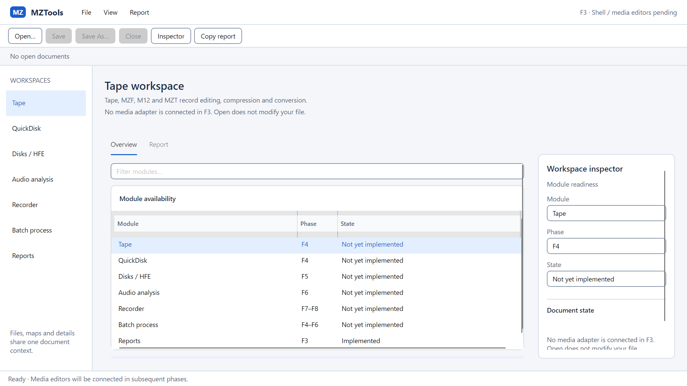
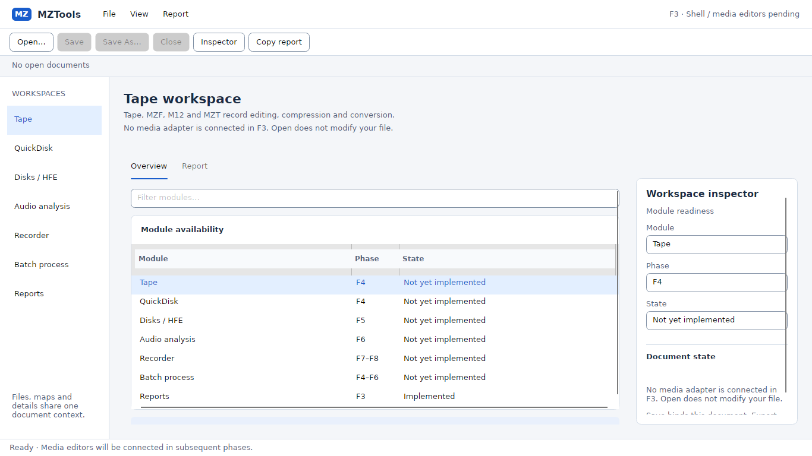
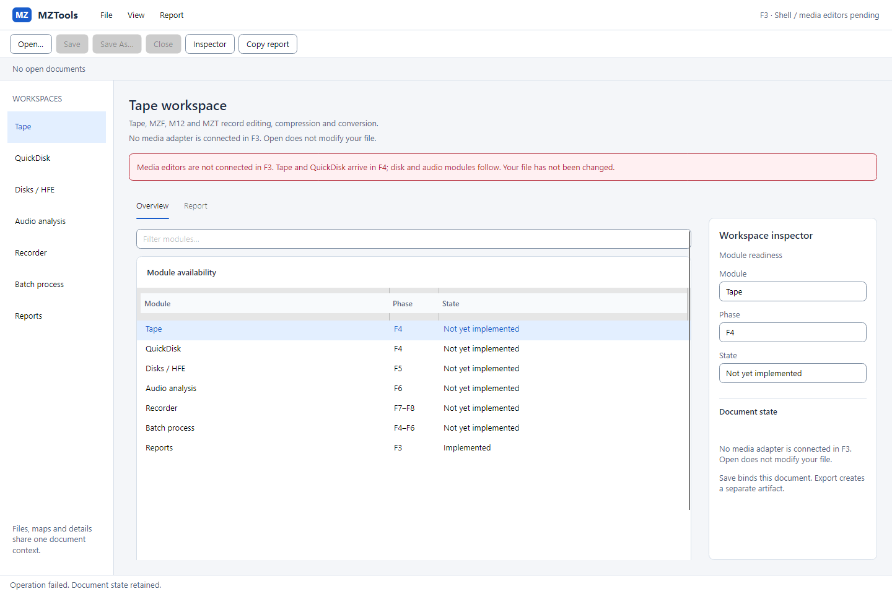
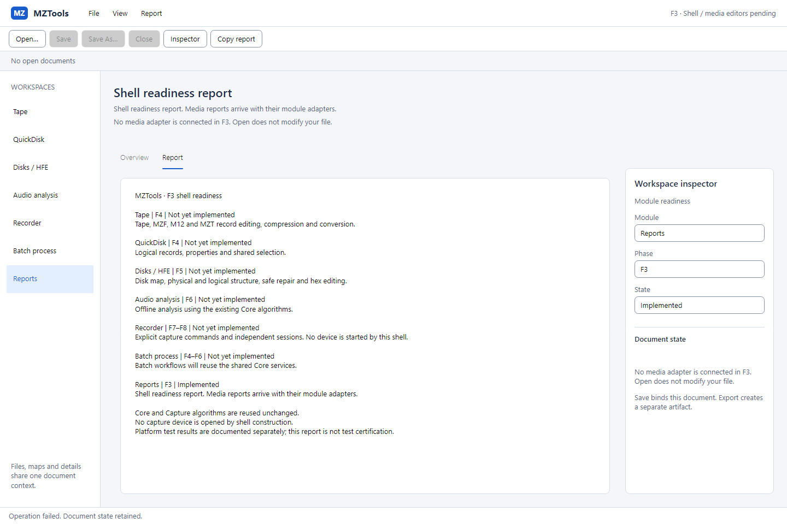
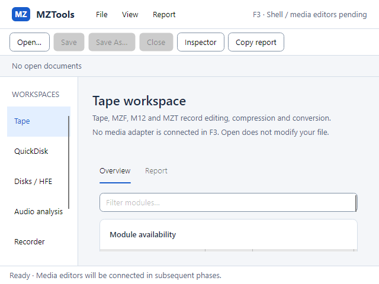
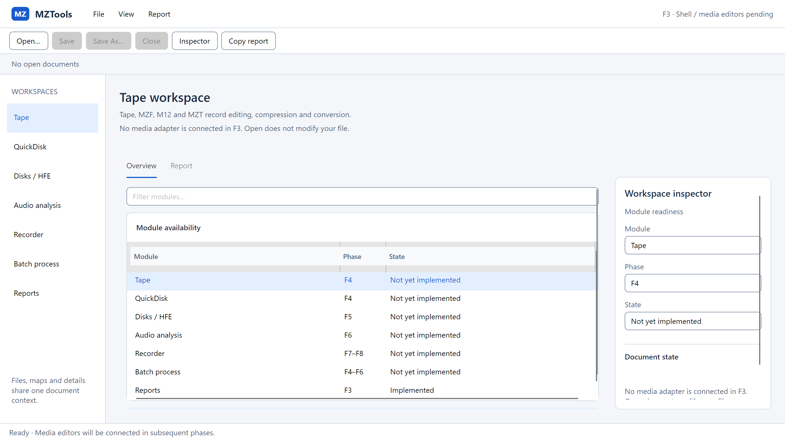

Windows · nativní okno
Win32, skutečný render scale 150 %. Logický viewport 1366 × 768, výstup 2049 × 1152 px. Jde o Skia render vizuálního stromu skutečného okna, nikoli o snímek celé plochy s titulkovým rámem.

Skutečná Avalonia UI, 29. 10. 2026. Ke schválení je shell a společné komponenty. Doménové editory médií, grafy a recorder se připojí v dalších fázích. Prázdný shell nepředstírá otevřené dokumenty ani výsledky měření.
Implementace a výsledky · Původ a SHA-256 obrazů · Schválený směr F2
Win32, skutečný render scale 150 %. Logický viewport 1366 × 768, výstup 2049 × 1152 px. Jde o Skia render vizuálního stromu skutečného okna, nikoli o snímek celé plochy s titulkovým rámem.

Debian 13, render scale 100 %, 1366 × 768 px. File picker používá platformní fallback Avalonia. WSLg není náhradou testu samostatného Linux desktopu.

Skutečný headless Skia render. Open s dosud nepřipojeným adaptérem nezaloží dokument a nezmění zdroj.

Čitelný, označitelný textový report stavu shellu. Nejde o certifikaci testů ani analýzu média.

Headless Skia, 100 %. Workspace lze vertikálně posunout; dosažitelnost posledního řádku má samostatný test. Inspector se otevírá do vlastněného detailního okna. Příkazy a stav zůstávají v pevných lištách.

Headless Skia při 1366 × 768 DIP do bitmapy 2732 × 1536 px. Ověřuje render a layout; není dokladem skutečného běhu na monitoru nastaveném na 200 %.

Skutečný vzhled F3 schválen uživatelem 29. 10. 2026. macOS, screen reader a fyzické audio zařízení: UNTESTED. Navazující F4 byla samostatně schválena a implementována; její skutečné obrazovky mají vlastní galerii.